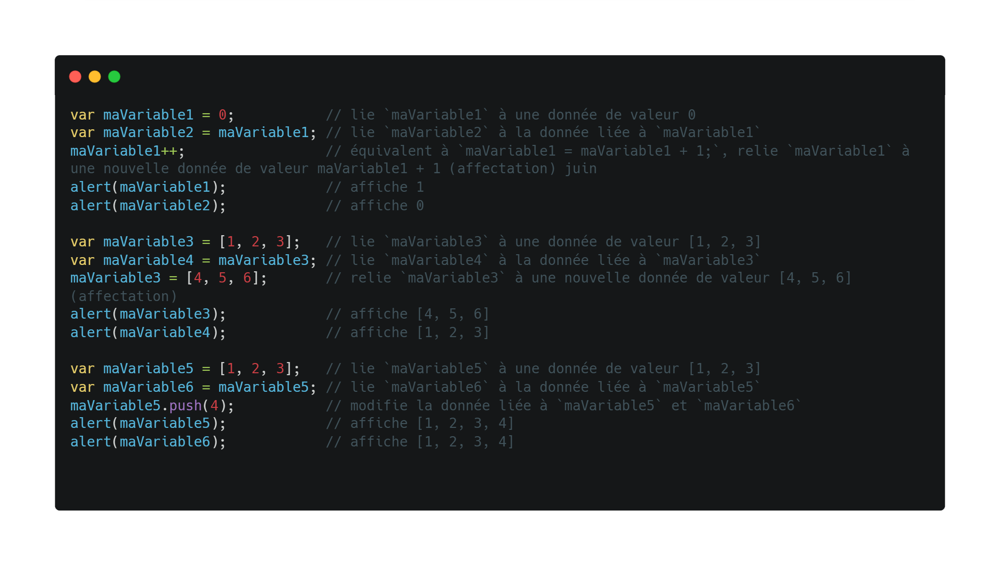
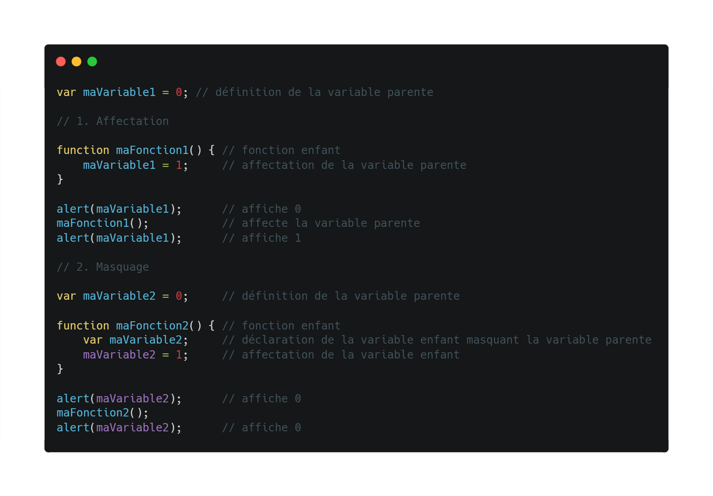

JavaScript en 100 Secondes
Dans la vidéo ci-dessous(en anglais), vous pouvez voir ce qu'est le JavaScript en 100 secondes.Crédit : @Fireship
Résumé
JavaScript (JS) est un langage de programmation principalement utilisé pour rendre les sites web interactifs et dynamiques. Il fait partie des technologies fondamentales du web, avec HTML (structure) et CSS (mise en forme).
L’origine de JavaScript :
Au début des années 1990, le Web était encore très simple : les pages web étaient statiques, construites uniquement avec HTML (pour la structure) et CSS (pour la présentation). Il n’y avait aucun moyen d’ajouter de l’interactivité sans recharger la page. C’est dans ce contexte que Netscape Communications, l’entreprise derrière le célèbre navigateur Netscape Navigator, a voulu créer un langage de programmation capable d'ajouter du dynamisme aux pages web directement dans le navigateur.
Eich et la création de JavaScript:
En 1995, Netscape engage Brendan Eich, un développeur talentueux, pour créer ce nouveau langage. Sa mission : développer un langage simple, rapide à apprendre, et capable de fonctionner directement dans le navigateur, en complément du langage Java (très populaire à l’époque).
Brendan Eich a alors créé le langage en seulement 10 jours ! Ce langage était à l'origine appelé Mocha, puis renommé LiveScript, avant d’être lancé officiellement sous le nom JavaScript, une décision prise par Netscape à des fins marketing.
Pourquoi le nom "JavaScript" ? :
Même si JavaScript n’a rien à voir avec le langage Java, Netscape a choisi ce nom pour profiter de la popularité de Java à ce moment-là. Cela a créé une confusion qui persiste encore aujourd’hui. Java est un langage compilé, fortement typé, orienté objet, utilisé pour de grosses applications. JavaScript est un langage interprété, souple, et destiné à rendre les pages web interactives.
Face au succès rapide de JavaScript et à la concurrence entre navigateurs (notamment avec Internet Explorer de Microsoft), il devenait essentiel de créer un standard commun. En 1997, le langage a été standardisé sous le nom d’ECMAScript (par l’organisation ECMA International). Depuis, JavaScript continue d’évoluer à travers différentes versions d’ECMAScript (ES5, ES6, etc.), apportant des améliorations et de nouvelles fonctionnalités.
Qui a créé le JavaScript ?
Le créateur de JavaScript : Brendan Eich
JavaScript a été créé en 1995 par un informaticien américain nommé Brendan Eich. À l’époque, il travaillait pour une entreprise appelée Netscape Communications, qui développait un des tout premiers navigateurs web populaires : Netscape Navigator.
Pourquoi a-t-il été créé ?
À cette époque, les sites web étaient très simples : ils contenaient uniquement du texte, des images et quelques liens. Il n’y avait aucune interaction possible sans recharger toute la page. Netscape voulait donc un langage de script capable de :
Rendre les pages plus interactives (boutons, menus, formulaires…)
Etre facile à apprendre pour les développeurs web
Fonctionner directement dans le navigateur, sans avoir besoin de serveur.
Une création en 10 jours
Brendan Eich a été recruté chez Netscape pour créer ce langage. Il l’a conçu en seulement 10 jours, ce qui est exceptionnel pour un langage de programmation. Le résultat était un langage simple, flexible et dynamique, parfait pour ajouter des interactions à une page web.
Les noms avant "JavaScript" :
Le langage a d’abord été nommé :
Mocha (nom interne pendant le développement)
Puis LiveScript
Et enfin JavaScript, pour des raisons marketing. Netscape voulait surfer sur la popularité du langage Java, même si les deux n’ont presque rien en commun.
Standardisation
Avec la popularité de JavaScript, il a fallu créer un standard officiel pour éviter que chaque navigateur n’ait sa propre version du langage. En 1997, le langage a été standardisé sous le nom ECMAScript, qui définit les règles du langage que tous les navigateurs doivent suivre.
Syntaxe de JavaScript
La syntaxe de JavaScript désigne l’ensemble des règles et conventions que l’on doit respecter pour écrire correctement du code dans ce langage.
Elle est inspirée de langages comme Java ou C, tout en restant plus souple et accessible, ce qui en fait un bon choix pour les débutants.
En JavaScript, les instructions sont généralement écrites ligne par ligne et se terminent souvent par un point-virgule, même si ce n’est pas strictement obligatoire.
Le langage permet de déclarer des variables pour stocker des informations, et de manipuler différents types de données comme du texte, des nombres, des valeurs vraies ou fausses, des tableaux, ou encore des objets.
Les blocs de code, comme ceux des conditions ou des boucles, sont délimités par des accolades.
JavaScript utilise aussi des opérateurs pour effectuer des calculs, comparer des valeurs ou combiner des conditions.
Le langage repose sur une logique événementielle : il est capable de réagir aux actions de l’utilisateur, comme un clic ou une saisie au clavier.
On peut également écrire des fonctions pour organiser le code, le rendre réutilisable et plus clair.
En résumé, la syntaxe de JavaScript est à la fois simple et puissante, ce qui permet de créer des sites web interactifs, dynamiques et modernes.
Sécurité
JavaScript et la structure DOM des pages HTML/XML ont quelques failles de sécurité.
En effet, des scripts malveillants peuvent se cacher dans le code d'une page web et s'exécuter sur l'ordinateur cible de l'utilisateur du Web.
Les fournisseurs de navigateurs web tentent de réduire ce risque avec deux restrictions :
l'une est de faire exécuter ces scripts dans un espace à part des autres données (sandbox) dans lequel seules des actions relatives au web (mouvements de souris, affichage de pixel, communications) peuvent être exécutées, sans avoir accès au système de fichier principal ;
la deuxième est de n'exécuter les scripts que selon les contraintes de same-origin policy : dans cet esprit, un site Web ne doit pas avoir accès aux informations telles que les noms d'utilisateur et mot de passe ou cookies reçus des autres sites visités.
Les vulnérabilités de JavaScript sont bien souvent des brèches d'au moins l'un de ces deux principes.
Certains sous-ensembles du langage Javascript tels que JavaScript—ADsafe ou Secure ECMAScript (SES) fournissent de plus grands niveaux de sécurité, en particulier pour les scripts créés par des tierces parties (notamment les publicités).
Caja est un autre logiciel pour inclure et isoler de manière sécurisée du JavaScript et du HTML tierce partie.
Politique de sécurité du contenu est la principale méthode destinée à assurer que seul un script de confiance est exécuté sur une page Web. Meltdown est une vulnérabilité indépendante de Javascript, qui peut notamment être exploitée en Javascript.
Utilisation
Le code JavaScript a besoin d'un objet global pour y rattacher les déclarations (variables et fonctions) avant d'exécuter des instructions.
La situation la plus connue est celle de l'objet window obtenu dans le contexte d'une page web.
D'autres environnements sont possibles dont celui fourni par Adobe ou l'environnement Node.js (voir plus bas Autres utilisations).
Les principaux domaines d'application de JavaScript sont avant tout la programmation, les activités de programmation de base et tout ce qui est lié à l'informatique.
Dans une page web :
Du code JavaScript peut être intégré directement au sein des pages web, pour y être exécuté sur le poste client.
C'est alors le navigateur web qui prend en charge l'exécution de ces programmes appelés scripts.
Généralement, JavaScript sert à contrôler les données saisies dans des formulaires HTML, ou à interagir avec le document HTML via l'interface Document Object Model, fournie par le navigateur (on parle alors parfois de HTML dynamique ou DHTML).
Il est aussi utilisé pour réaliser des applications dynamiques, des transitions, des animations ou manipuler des données réactives, à des fins ergonomiques ou cosmétiques.
JavaScript n'est pas limité à la manipulation de documents HTML et peut aussi servir à manipuler des documents SVG, XUL et autres dialectes XML.
Intégration :
Il existe plusieurs façons d’intégrer JavaScript dans du code html:
Dans des attributs d’évènements html : <button onclick="alert('clic !')">clic ici</button>. Le code JavaScript alert('clic !')sera exécuté quand le bouton sera cliqué.
Dans des balises <script> : <script>//ici on peut mettre du code JavaScript</script>
Dans des fichiers externes : <script src="chemin/ver/mon/fichier.js"></script>
Autres utilisations
Dans la barre d’adresse d’un navigateur :
aper des adresses comme javascript: ducodejavascript provoque l’exécution de ducodejavascript. Exemple: javascript: alert(document.cookie) provoque l’affichage des cookies de la page.
Sur un serveur web :
JavaScript peut également être utilisé comme langage de programmation sur un serveur HTTP à l'image des langages comme PHP, ASP, etc.
D'ailleurs le projet CommonJS travaille dans le but de spécifier un écosystème pour JavaScript en dehors du navigateur (par exemple sur le serveur ou pour les applications de bureau natives).
Le projet a été lancé par Kevin Dangoor en janvier 2009.
Le projet CommonJS n'est pas affilié avec le groupe de l'Ecma International TC39 travaillant sur ECMAScript, mais certains membres du TC39 participent au projet.
Historiquement, JavaScript était proposé sur les serveurs de Netscape, par la suite distribués par Sun Microsystems sous les noms iPlanet et Sun ONE, mais JScript peut aussi être utilisé sur les serveurs Internet Information Services de Microsoft.
JScript peut d'ailleurs servir pour scripter une plate-forme Microsoft Windows via Windows Scripting Host (WSH).
Il existe par ailleurs des projets indépendants et Open Source d'implémentation de serveurs en JavaScript.
Parmi eux, on pourra distinguer Node.js, une plateforme polyvalente de développement d'applications réseau se basant sur le moteur JavaScript V8 et les spécifications CommonJS.
Autres supports
ActionScript, utilisé dans Adobe Flash, est aussi une mise en œuvre d'ECMAScript. Il permet de manipuler tous les éléments de l'animation, considérés comme des objets. JavaScript peut être utilisé pour scripter d'autres applications Adobe (Photoshop, Illustrator, …), ce qui permet d'avoir des scripts indépendants de la plate-forme (Microsoft Windows, Apple OSX, Linux…).
JavaScript est enfin utilisé dans la plate-forme de développement de Mozilla, sur laquelle sont basés plusieurs logiciels comme des navigateurs Web, pour des tâches relatives à l'interface utilisateur et à la communication interne (ex. : les extensions de Firefox et Thunderbird sont installées à base de fichiers XPI utilisant le JavaScript. Voir aussi Prefs.js).
Depuis 2004, l'objet js de l'environnement de programmation graphique Max/MSP permet d'ouvrir une fenêtre pour programmer en JavaScript, au sein même d'un programme Max/MSP.
Les logiciels ImageJ et CaRMetal sont munis de consoles JavaScript, qui leur permettent d'écrire des scripts dans un contexte graphique. Algobox utilise JavaScript pour la syntaxe de ses fonctions. H5P se sert de HTML5 et Javascript pour faciliter la création de contenus interactifs en ligne.
JavaScript est aussi utilisé dans un contenu BIFS pour l'exploitation des événements. Pour cela la spécification BIFS fournit un nœud Script pour incorporer de l'ECMAScript.
La suite bureautique OpenOffice.org permet d'utiliser JavaScript comme langage de macros.
JavaScript est aussi utilisable en shell[28] ou avec les gadgets Vista.
Le format graphique vectoriel SVG incorpore le langage ECMAscript pour créer des graphiques interactifs directement exploitable dans un navigateur.
Enfin, JavaScript est également utilisé pour dynamiser le QML de la bibliothèque graphique Qt.
Particularités du langage
Liaison des identifiants :
En JavaScript, toutes les expressions (identifiants, littéraux et opérateurs et leurs opérandes) sont de type référence (comme en Python et Ruby, mais à la différence du C++, Java, C#, Swift et OCaml qui possèdent aussi des expressions de type valeur), c'est-à-dire que leur évaluation ne produit pas une donnée directement mais une référence vers une donnée. La référence se nomme le référent de l’expression et la donnée le référé de l’expression.
En JavaScript, l'affectation d'une variable modifie son référent, autrement dit, elle lie la variable à une autre donnée : on parle de changement de liaison de la variable (en anglais variable rebinding).
Portée lexicale des variables :
La portée lexicale d'une variable est la partie d'un programme où la liaison entre son identifiant et sa donnée est valide. En JavaScript, la portée lexicale d'une variable peut être de deux types, selon le mot-clé utilisé pour la déclarer :
var : au niveau de la fonction (ou de l'espace global) où elle est déclarée (comme en Python, Ruby) ;
let ou const (introduits dans ECMAScript 6) : au niveau du bloc où elle est déclarée (comme en C++, Java, C#) — une fonction étant un bloc particulier.
Depuis le support de let par les navigateurs modernes, var ne doit plus être utilisé et son utilisation est considéré comme une mauvaise pratique.

Une variable peut être affectée ou masquée par une fonction enfant de la fonction (ou de l'espace global) où elle est déclarée :
